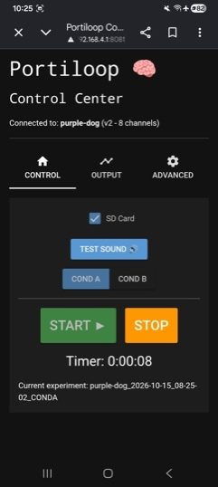

Running the night
The electrodes are on and the Control Center is set. This tutorial follows the night from the last sound test to the morning: what Start creates, why nothing happens for the first minutes, what the Portiloop does on its own all night, what to do when the participant wakes up, and how to end the recording. Two widgets let you plan a night with wake-ups and watch, sample by sample, how the device protected the tutorial night when its detection electrode came off.
In this tutorial you will
- Test the earphones, knowing what Test Sound does and does not prove
- Know what Start creates on the SD card and in the metadata
- Understand the "Stimulation starts after" delay and what it pauses
- Follow what the device does all night: detection, sounds, and the lead-off protection that stops stimulation when the detection electrode falls
- Handle a wake-up with Stop then Start, and know its consequences for the data
- End the night correctly, and know the automatic 10 h stop
- Diagnose the common problems with the troubleshooting table
Earphones and Test Sound
The protocol's step 24:
"Put the earphones on (make sure that the Right earphone is on your right ear, and the Left earphone is on your left ear), use the right size of earphones and tape the earphones to the ear, and make sure the sound is properly delivered in both ears by pressing 'Test Sound' in the Control Panel of the Portiloop Control Center. → IF YOU DON'T HEAR ANY SOUND: 1) This is normal if the Pipeline is set to 'Acquisition only'. Change it to either 'Sleep spindles' or 'Sleep slow oscillations (upstate)'. 2) If the sound still does not work, please unplug and replug the earphones."CLAS protocol [1], step 24

What Test Sound does in the code (test_sound() in simple_gui.py [2]):
- It applies the current volume.
- If the selected pipeline has a stimulator, it creates one and plays the stimulation sound once. Otherwise it does nothing: silence with "Acquisition only", the one pipeline without a stimulator.
It plays the same sound that the night will use, at the same volume, whatever the condition: Cond A (sham) and Cond B both make it play (test_stimulus() in custom_stimulators.py [5] does not look at the condition). So the test does not reveal the condition to the participant.
The sound. The upstate pipeline plays the file 15msPN_48kHz_norm_stereo.wav ("detection_sound" in constants.py [6]). We read the file: 2 channels, 48 kHz, 16 bit, 15.0 ms long; the left and right channels are almost identical (correlation 0.99999986), so both ears receive the same sound. The "PN" in the name suggests pink noise, but the code never says so, and our Welch estimate of its spectrum is flat between 200 Hz and 16 kHz (a slope of about 0 dB per octave, where pink noise falls by about 3 dB per octave): it looks like white noise. Ask whoever made the file before describing it in a paper.
The volume is the "Sound output volume" of the Advanced tab: a software volume, not a calibrated sound level (tutorial 03). The same percentage can sound different with other earphones or another fit in the ear.
Pressing Start
Protocol, step 25: "Secure the electrode cables to the bedside table using tape." Step 26: "In the Control panel, press Start. A timer and the name of the file should appear." What happens when you press Start, in the order of the code (start() in [2] and start_capture() in capture.py [3]):
- The impedance check stops if it was running (the chip cannot measure impedance and record at the same time). The last check's results are kept for the metadata.
- The settings are saved in
Previous run.json, which the device will reload at its next start-up (tutorial 03). - The file name is built from the recording name (or the device name if empty), the date and time of the device clock, and the condition:
f"{prefix}_{time_str}_{stim_str}.csv"withstim_str = "CONDB" if self.stim_on else "CONDA". For exampleCLAS_12_2026-11-26_22-31-05_CONDB.csv. - The pause is armed: if "Stimulation starts after" is more than 0, detection is paused until that many minutes after Start (next section).
- The folder is chosen: the SD card if it is mounted and writable (
/media/sd_card/workspace/recordings), otherwise the internal memory (~/workspace/recordings). Each recording gets its own folder named like the file. - The recording process starts: it resets the amplifier, powers down the channels that were OFF at the last impedance check (except the detection channel), and runs a 2 s connection test of all electrodes before the first sample. It then writes
<name>_metadata.json(all the settings, the impedances of the last check) and<name>_leadoff.json(the log of lead-off events, empty at first).

After Start, the SD card holds:
workspace/recordings/
CLAS_12_2026-11-26_22-31-05_CONDB/
CLAS_12_2026-11-26_22-31-05_CONDB.csv (signals, written all night)
CLAS_12_2026-11-26_22-31-05_CONDB_metadata.json (settings, at Start)
CLAS_12_2026-11-26_22-31-05_CONDB_leadoff.json (lead-off events)
CLAS_12_2026-11-26_22-31-05_CONDB_stats.json (at the end)The columns and the JSON fields are explained in tutorial 05.
During the recording the Control tab shows the timer and the file name, the Cond toggle and the whole Advanced tab are locked, the Check tab says "Unavailable during a recording.", and the Output tab shows one channel at a time. Closing the browser or letting the phone sleep does not stop the recording: it runs in its own process on the device. Opening the address again shows the running timer.
The "Stimulation starts after" delay
The protocol (step 18) describes it as "the period during which no sound is played at the beginning of the recording. It can be adjusted based on the expected time needed to fall asleep." In the code it is called sleep_timeout, in minutes:
if self.sleep_timeout > 0:
self.time_unpause = self.time_started.timestamp() + self.sleep_timeout * 60
self.pause_value.value = True
...
def check_sleep_timeout(self):
if self.pause_value.value:
current_time = time.time()
if current_time > self.time_unpause:
self.pause_value.value = False- Range: the slider goes from 0 to 180 minutes; 0 means no delay.
- What is paused: both detection and stimulation (the recording loop only calls the detector when not paused, [3]). During the delay the
detectionandstimulationcolumns are 0 andstimulation_onis 0, in Cond A as in Cond B. The signals are recorded normally. - When it ends: a timer checks every 10 s (
ui.timer(10, exp_state.check_sleep_timeout)), so detection resumes up to about 10 s after the nominal time. In the tutorial night (delay 25 minutes)stimulation_onswitched to 1 at 1502.4 s, 2.4 s after the 25 minutes. - When the first sound comes: only when the detector finds a slow oscillation that meets its criteria during sleep. In the tutorial night the first sound came at minute 30.9, 5.8 minutes after detection resumed. The upstate detector needs one qualifying slow oscillation to estimate where the up-state is, and that first one triggers no sound (tutorial 01).
- Which pipelines: the pause is armed for every pipeline, but it only pauses detection and stimulation. Acquisition only has no detector, so for it nothing changes: the signals are recorded from the first second.
stimulation_on became 1 after about 1 minute.What the Portiloop does all night
Once the delay is over, the device works on its own. For every new sample (250 per second), the recording loop:
- Filters the detection channel (ch6, Cz) to keep the slow oscillation band.
- Detects: when a slow wave meets the amplitude and duration criteria, the upstate detector fires at the predicted up-state (tutorial 01). The
detectioncolumn gets a 1. - Stimulates: in Cond B, the sound is played at once; in Cond A, nothing is played. In both, the
stimulationcolumn gets a 1. Two sounds are never closer than 0.1 s:self.wait_t = .1 # Stimulate the first point of a detected SO only(SlowOscillationStimulatorin [5]). With the protocol's three delays at 0, this is the only spacing rule. - Screens for fallen electrodes every 10 s (next section).
In the tutorial night (Cond B, 7.39 h): 1,930 sounds, the first at minute 30.9 and the last at minute 373.0. The intervals between consecutive sounds had a median of 3.10 s; the shortest was 0.328 s, and 15 intervals were shorter than 0.5 s. Detection was running (stimulation_on = 1) during 78.5% of the recording: the delay at the beginning and the end of the night (below) account for the rest.
The lead-off protection
An electrode that falls off leaves its amplifier input floating. The input drifts to the limit of the amplifier and, because every recorded channel is part of the bias (ground) feedback loop, a floating input degrades the other channels too. The Portiloop software has a protection against this, in leadoff.py [4]. It is on by default ("leadoff_detection": True) and has no setting in the Control Center:
- At Start, a 2 s connection test removes the electrodes that are not connected from the bias loop (event
not_connected_at_start). - Every 10 s, the last 2 s of each channel are screened. A channel is suspect if its mains hum is above 800 µV, or if more than 20% of its samples are at the limit of the amplifier.
- After 2 suspect screenings in a row, a 1.5 s connection test runs on the suspect channels. A confirmed channel is removed from the bias loop for the rest of the recording (
disabled, reasonopen); a channel that passes the test but has extreme mains hum (above 5000 µV) is removed too (reasonmains). A suspect that passes is not tested again for 60 s. - If all channels look floating at once, the reference or the bias electrode is probably off: nothing is removed (
reference_or_bias_off), and the device waits until 2 clean screenings (reference_or_bias_recovered).
A removed channel is still recorded (it is only taken out of the bias loop). What matters for the experiment is the effect on stimulation (leadoff_event() in [3]):
- If the detection electrode is not connected at Start or is disabled during the night, detection and stimulation are paused for the rest of that recording.
- While the reference or bias seems off, they are paused until the channels recover.
- During a pause,
stimulation_onis 0. The Control Center does not show these events: they are only in_leadoff.jsonand in the device's log.
This is what happened in the tutorial night, at minute 373. The night's _leadoff.json was not retrieved from the device, so the event names below are inferred from the signals and from the code.
Notes on the excerpt: it is the raw signal minus its median over the previous minute, clipped at ±3276 µV (that is how excerpts.json stores it), so a channel at the amplifier limit (Cz went to about ±187,500 µV) appears as a flat line at the clip value. The ECG channels show the heartbeats clearly before the movement, despite their red impedance tiles (tutorial 03). The pause itself (minute 373.36) falls 4.3 s after the end of the 30 s excerpt; the bottom strip shows it.
What the protection changed: after minute 373.4, Cz was at the limit for about three quarters of the samples (our count: 0.753 of the samples until the end, 70.2 minutes later) and no sound was played. The offline replay of the night (tutorial 08), which does not simulate the lead-off protection, keeps stimulating on that signal after minute 401, where the device had stopped.
If the participant wakes up
The protocol speaks to the participant, who runs the device alone at night:
"If you wake up during the night and the sounds prevent you from falling back asleep, press the Stop button, then immediately press the Start button. This will give you another X minutes without any sounds, where X is the duration you set in Step 18."CLAS protocol [1], end of section III
This works as described, and the code adds consequences that the participant does not see:
- A new file and a new folder. Start builds a new name with the new time, so the night is split into two (or more) recordings, each with its own metadata, lead-off log and stats. The analysis must put them together (tutorial 05, tutorial 06).
- The full delay restarts from the new Start, as the protocol says.
- A gap in the data. Nothing is recorded between Stop and the first sample of the new file. The new recording starts with a 2 s connection test before its first sample, plus the time between the two presses and the time to start the process; we have not measured the total. A participant who presses Stop and goes to the bathroom before pressing Start makes a longer gap; one who forgets Start ends the recording.
- The condition can change. Between Stop and Start the Cond toggle is unlocked. A sleepy tap on it switches the rest of the night to the other condition, and the new file name will say so. Check the file names in the morning.
- The last impedance check is reused: its values go into the new metadata, and electrodes that were OFF then are powered down again.
- The lead-off protection starts over: a detection electrode disabled in the previous file is tested again at the new Start.
- The 10 h limit counts from the new Start.
In the morning
The protocol's section IV, "End of overnight recording and cleaning":
- Stop. "On the phone, in the Portiloop Control Center, press the Stop button." The recording process finishes writing the CSV and writes
_stats.json(number of samples, lost samples). Stop before anything else, so that the files are complete. - Power off. "Turn off the Portiloop: by pressing the Power button (only one short press)." The software README says instead "press the Power button for 3 seconds again and wait for a couple more seconds for the light close to USB-C Power to turn off" [7]. We have not verified which press the lab's devices need. In both cases, wait until the light is off before unplugging the battery; the README adds that the light may refuse to turn off, and then to wait a couple of seconds before unplugging.
- Earphones. "Unplug the earphones."
- SD card. "Remove the SD card." The README: "Remove the SD card only when no recording is running." Copy the files as described in tutorial 05.
The 10 h limit
Every recording stops by itself 10 h after its Start: "duration": 36000 seconds in constants.py [6], used as t_max = t_start + duration in the recording loop [3], and the Control Center never changes it. The Control Center notices within 2 s that the recording has ended and resets itself (Start becomes active again). Nothing is recorded after that, and nothing on the phone tells you that it happened, except that the timer is gone. If lights off is at 22:00 and the participant sleeps past 08:00 without a wake-up, the end of the night is lost. A wake-up with Stop and Start restarts the 10 h. The tutorial night lasted 7.39 h; its metadata carries "duration": 36000.
Troubleshooting
| Symptom | Likely cause | What to do |
|---|---|---|
| Nothing happens when you press the power button | The battery is off (it turns itself off quickly) | Press the battery's side button, then the Portiloop's power button within a few seconds (protocol step 5). |
| The light stays orange and never turns green | The board did not finish starting; the README says it then needs to be reflashed | Turn off, wait, try once more; if it stays orange, use another device and report it to the technical team. |
| The Wi-Fi network is not in the list | The device is still starting, or the network has another name than expected | Wait for green. The name was typed at installation; check the device's label or the lab notebook. |
The page http://192.168.4.1:8081/ does not load | The phone left the Portiloop network (no internet), the address was typed with https, or the Control Center is still starting | Stay on the Portiloop network, turn mobile data off, type http://. The service restarts 60 s after a failure: wait a minute and reload. |
| The SD Card box is not ticked | The card is not inserted, not mounted, or not writable | Turn the device off, reseat the card (printed side down, it sticks out a little), turn on again (protocol step 10). Never record without it. |
| Test Sound is silent | Pipeline without stimulator (Acquisition only), earphones not fully plugged, volume at 0 | Select "Sleep slow oscillations (upstate)"; unplug and replug the earphones (protocol); check the volume. |
| All impedance tiles OFF, REF "?"; hint "check the ground (bias) electrode first" | The bias electrode (grey, right earlobe) is off | Fix the bias electrode, then Check again. |
| REF OFF, the other tiles grey "?" | The reference electrode (white, behind the right ear) is off | Fix the reference, then Check again. |
| Check is greyed out, "Unavailable during a recording." | A recording is running | Stop first (this ends the current file). |
| Cond toggle or Advanced settings greyed out | A recording is running | Stop, change, Start (a new file). |
| The Output tab shows no plot | The plot exists only during a recording, one channel at a time | Start, then choose the channel in Display Channel. |
| Settings are back to Acquisition only, 60 Hz, 0 minutes, empty name | The software was updated (saved settings are ignored when the version changes) | Set everything again from the protocol (tutorial 03); save a preset. |
| The file carries the previous participant's number, or the device name | The recording name is remembered from the last Start, or was empty | Set the name before Start. For a file already recorded, note the correction in the lab notebook; do not rename silently. |
| The date or time in the file name is wrong | The device clock was not synchronized (it is never changed during a recording) | Press Sync Clock with Browser before Start; check the phone's own clock. |
| The timer disappeared and Start is active again in the morning | The 10 h limit was reached, or the recording process crashed | Look at the files: a CSV of 10 h means the limit. Otherwise report it with the device's log (~/workspace/logs/portiloop.log). |
| No sound at all in a Cond B night (no stimulation in the CSV) | Still in the delay; no slow oscillations yet (awake or light sleep); the detection electrode was not connected at Start or came off (lead-off pause); wrong pipeline; Cond A | Check stimulation_on, _leadoff.json and the metadata (tutorial 05). |
| The participant cannot fall asleep again because of the sounds | Stimulation during light sleep or wakefulness | Stop, then Start at once (protocol); see the consequences above. |
| A channel is all zeros in the CSV | Its electrode was OFF at the last impedance check before Start, so it was powered down | Next time, run Check again after the last fix, just before Start. |
Protocol and software: points about the night
- Test Sound (step 24): the protocol's explanation for silence is right (Acquisition only is the one pipeline without a stimulator). It plays in both conditions, and it is not locked during a recording.
- "Another X minutes without any sounds" after Stop and Start: right; also no detection, a new file, a gap, and a condition that can be changed by mistake.
- Power off: "only one short press" (protocol) versus "press the Power button for 3 seconds again" (README). Not verified on the device.
- The 10 h limit is not in the protocol.
- The lead-off protection is not in the protocol: a detection electrode that falls off stops stimulation for the rest of the recording, silently.
- The software README says that
stimulation_on"is1when the UI stimulation switch is active and0otherwise" [7]. The code sets it from whether detection is running (not paused by the delay or the lead-off protection), whatever the condition. It is 1 in Cond A too.
Discrepancies about the settings are in tutorial 03.
Exercises
A wake-up during the delay
Lights off at 23:00 with a 45 minute delay. The participant wakes at 23:30, presses Stop then Start, and sleeps again. When can the first sound be played? How many files will there be in the morning if there is no other wake-up?
Answer
No earlier than 00:15 (45 minutes after the new Start at about 23:30), and up to about 10 s later because the delay is checked every 10 s; in practice later still, at the first qualifying slow oscillation. Two files: a 30 minute one with stimulation_on = 0 throughout, and the night's main file. Use the night planner to check.
A long sleeper
Lights off at 21:45, no wake-up, the participant gets up at 08:15. What does the morning file contain, and what would have prevented the loss?
Answer
The recording stopped by itself at 07:45, 10 h after Start; the last 30 minutes are not recorded. Pressing Stop then Start during a wake-up would have restarted the 10 h. For long sleepers, plan a later Start or tell the participant to do Stop and Start if they wake in the second half of the night.
Reading the tutorial night's end
In the lead-off widget, how long did the device take from the moment Cz reached the amplifier limit to the pause? Which two rules of leadoff.py explain that duration?
Answer
14.3 s (from 22387.36 s to 22401.68 s after the start of the recording). Screening runs every 10 s on the last 2 s of signal; a confirmation test (1.5 s) is run only after 2 suspect screenings in a row. Cz reached the limit at 22387.36 s; the screenings at 22390 s and 22400 s were both suspect (100% of the 2 s at the limit); the 1.5 s test followed, and detection paused at 22401.68 s. By our reading of the code, the delay can range from about 11.5 s to about 22 s, depending on where the fall lands between screenings: the fall must fill more than 20% (0.4 s) of a screened 2 s window, a second suspect screening follows 10 s later, then the 1.5 s test.
References
- CLAS-Zambia protocol, sections III and IV (lab document, not public).
- portiloop/src/simple_gui/simple_gui.py, the Control Center (portiloop-software, branch main).
- portiloop/src/core/capture.py, the recording loop.
- portiloop/src/core/leadoff.py, the lead-off protection.
- portiloop/src/custom/custom_stimulators.py, the stimulators and Test Sound.
- portiloop/src/core/constants.py, default settings, the sound file and the 10 h duration.
- README.md of portiloop-software (power, SD card, output files).